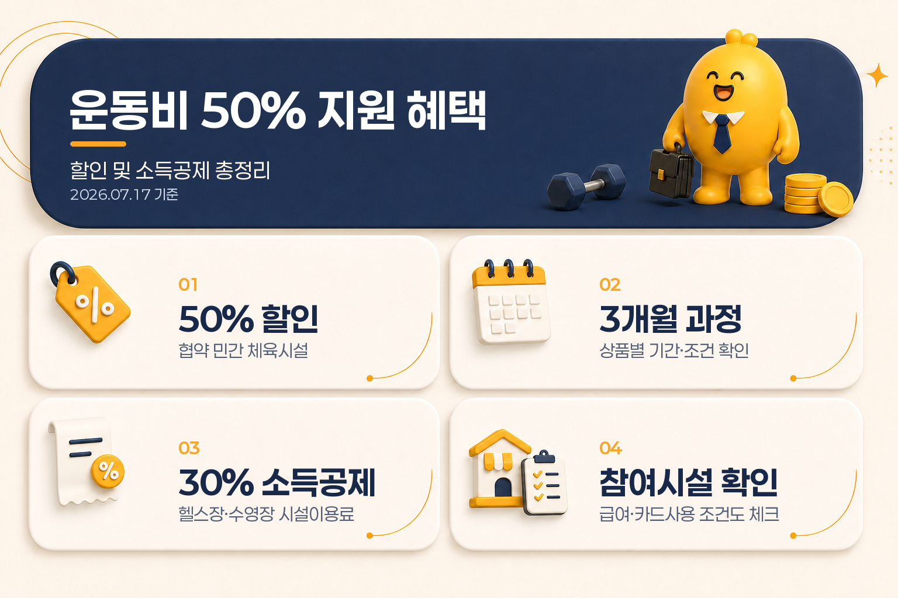

운동비 50% 지원 혜택, 할인 및 소득공제 총정리
운동을 시작할 때 확인할 수 있는 혜택은 크게 두 가지입니다. 생활건강체육진흥회 협약시설의 운동비 할인과, 헬스장·수영장 이용료에 적용되는 문화비 소득공제입니다.
둘 다 운동비를 줄이는 방법이지만 적용 시점과 조건은 다릅니다. 할인은 등록 단계에서 결제금액을 낮추는 방식이고, 소득공제는 연말정산에서 과세 대상 소득을 줄이는 방식입니다. 아래에서 두 제도를 나눠 보고, 헬스·수영·요가·필라테스·PT·회원권을 등록하기 전에 어떤 항목을 확인해야 하는지 정리해 보겠습니다.
기준일: 2026년 7월 17일
먼저 보는 운동비 혜택 비교
| 구분 | 협약 체육시설 운동비 할인 | 체육시설 문화비 소득공제 |
|---|---|---|
| 혜택 형태 | 등록·수강료 할인 | 연말정산 소득공제 |
| 기본 안내 | 협약 민간 체육시설 상품별 최대 50% 할인 | 헬스장·수영장 이용료 30% |
| 대상 기준 | 협약시설, 지역·신규회원·상품 조건 등 | 총급여 7,000만 원 이하 근로자, 참여 사업자 등 |
| 금액 확인 | 상품별 할인율·기간·한도 확인 | 문화비 등 추가 공제 한도 합산 연 300만 원 |
| 확인 시점 | 등록 전 상품 페이지와 시설 안내 | 결제 전 참여시설 검색과 결제 항목 확인 |

핵심은 “50% 할인”과 “30% 소득공제”를 같은 현금 지원으로 보지 않는 것입니다. 50%는 협약 상품에 표시된 할인율이고, 30%는 소득공제 대상 금액에 적용되는 공제율입니다. 소득공제 30만 원이 곧 세금 30만 원 환급을 뜻하는 것도 아닙니다.
1. 운동비 50% 할인은 협약시설의 상품별 혜택
생활건강체육진흥회의 공식 취미찾기 사업 페이지에서는 협약을 맺은 민간 체육시설의 수강료를 최대 50% 할인하는 구조를 안내하고 있습니다. 헬스, 크로스핏, 필라테스, PT 등 상품이 보일 수 있지만, 모든 시설과 모든 운동 종목에 같은 조건이 적용되는 방식은 아닙니다.
등록 전에는 다음 조건을 상품별로 확인해야 합니다.
- 해당 시설이 생활건강체육진흥회 협약시설인지
- 거주지역이나 시설 소재지 등 지역 조건이 있는지
- 신규회원·첫 등록·기존 이용 이력 제한이 있는지
- 3개월 과정인지, 이용 횟수 또는 이용 기간이 별도로 정해져 있는지
- 50%가 전체 결제금액에 적용되는지, 특정 상품·횟수에만 적용되는지
- 중도 해지·환불 때 할인액을 어떻게 다시 계산하는지
온라인에서 함께 소개되는 “월 최대 10만 원·3개월”이라는 표현은 신청자가 많이 찾는 대표 조건으로 보이지만, 공식 사업 소개에서 공통적으로 확인되는 범위는 협약시설 수강료 최대 50% 할인입니다. 월 한도와 3개월 과정은 시설·상품 공고에서 다시 확인하는 항목으로 보는 것이 정확합니다.
따라서 운동비 할인은 정부가 모든 헬스장 이용료를 일괄 지급하는 현금성 지원이라기보다, 협약시설에서 특정 상품을 등록할 때 적용되는 할인 혜택에 가깝습니다. 같은 헬스장이라도 상품, 회원 유형, 등록 시점에 따라 조건이 달라질 수 있습니다.
2. 운동시설 이용료 소득공제는 연말정산 혜택
2025년 7월 1일 이후 사용분부터 일정 요건을 충족한 헬스장·수영장 이용료는 문화비 소득공제 대상에 포함됐습니다. 정책브리핑과 국세청 안내를 기준으로 확인할 수 있는 핵심 조건은 다음과 같습니다.
| 확인 항목 | 내용 |
|---|---|
| 총급여 기준 | 7,000만 원 이하 근로자 |
| 공제율 | 대상 시설 이용료의 30% |
| 추가 공제 한도 | 문화비·전통시장·대중교통 관련 추가 한도 합산 연 300만 원 |
| 시행 시점 | 2025년 7월 1일 이후 사용분 |
| 결제 조건 | 신용카드 등 사용액이 총급여의 25%를 넘은 이후 공제 검토 |
| 시설 조건 | 문화비 소득공제 참여 사업자 및 법령상 대상 시설 |
여기서 “30% 공제”는 결제액의 30%를 바로 돌려준다는 뜻이 아닙니다. 예를 들어 소득공제 대상 운동시설 이용료가 100만 원이라면 30만 원이 소득공제 대상 금액으로 계산되는 구조입니다. 실제 세금 감소액은 소득공제 후 적용되는 세율과 다른 공제 항목, 결정세액에 따라 달라집니다.
또 연 300만 원 한도는 헬스장에만 따로 주어지는 한도가 아닙니다. 문화비·전통시장·대중교통 등 관련 추가 공제 항목을 합산해 보는 한도입니다. 이미 다른 항목에서 추가 한도를 사용했다면 운동시설 이용료에 적용될 수 있는 여지가 줄어들 수 있습니다.
3. 헬스·수영·요가·필라테스는 같은 기준으로 보지 않기
문화비 소득공제의 체육시설 범위는 법령상 수영장과 체력단련장 중심으로 정해져 있습니다. 그래서 “운동을 위한 결제”라는 이유만으로 모든 시설 이용료가 자동으로 포함되는 것은 아닙니다.
헬스장
체육시설법상 체력단련장에 해당하고 문화비 소득공제 참여 사업자로 등록된 경우, 시설 이용료를 우선 확인할 수 있습니다. 결제 영수증에 시설 이용료와 PT·개인교습료가 함께 표시된다면 항목별 인정 범위를 따로 물어보는 것이 좋습니다.
수영장
법령상 대상 시설 범위에 수영장이 포함됩니다. 다만 강습료, 개인레슨, 대관료 등 세부 결제 항목은 시설 이용료와 구분될 수 있으므로 결제 전 영수증 항목을 확인해야 합니다.
요가·필라테스
요가나 필라테스는 운동 종목만으로 소득공제 대상이라고 단정하기 어렵습니다. 해당 사업자의 업종 분류, 시설 등록, 문화비 소득공제 참여 여부, 결제 항목을 함께 확인해야 합니다. 반면 협약시설 운동비 할인에서는 상품 페이지에 요가·필라테스가 포함될 수 있으므로, 할인과 소득공제를 각각 따로 확인해야 합니다.
PT·개인교습·회원권
개인교습비와 회원권 등은 법령상 문화비 소득공제에서 제외되는 항목이 있을 수 있습니다. “헬스장에 결제했다”는 사실만으로 PT와 개인레슨까지 모두 공제된다고 보면 안 됩니다. 시설 이용료, 강습료, 개인교습료, 운동용품·음료가 한 번에 결제된다면 항목을 분리해 영수증에 표시할 수 있는지 먼저 확인하는 편이 안전합니다.
4. 할인받은 운동비도 소득공제를 함께 볼 수 있나
두 제도는 성격이 달라서 결합 가능 여부를 한 문장으로 확정하기 어렵습니다. 할인은 협약시설의 상품 조건이고, 소득공제는 결제처·결제 항목·근로자 요건을 보는 세제 제도이기 때문입니다.
실무적으로는 아래 순서로 확인하면 됩니다.
- 협약시설 할인 적용 여부와 할인 후 최종 결제금액을 확인합니다.
- 결제할 시설이 문화비 소득공제 사업자 검색에 나오는지 확인합니다.
- 결제금액 중 시설 이용료와 PT·개인교습·용품·음료가 구분되는지 확인합니다.
- 본인의 총급여 기준과 카드 사용액 25% 기준을 확인합니다.
- 결제 후 카드 명세서와 영수증에서 실제 반영 항목을 확인합니다.
할인 적용 후 최종 결제액이 카드로 결제되고, 해당 시설과 항목이 소득공제 요건을 충족한다면 그 금액을 기준으로 소득공제를 검토할 수 있습니다. 다만 협약시설 할인과 문화비 소득공제가 모든 시설·상품에서 자동으로 동시에 적용된다는 뜻은 아니므로, 결제 전 시설에 두 혜택의 적용 가능성을 각각 문의해야 합니다.
5. 등록 전 확인 체크리스트
운동비 50% 할인 쪽
- 협약시설 목록에 시설명이 있는지
- 할인 상품이 신규회원 전용인지
- 50% 할인 대상이 전체 수강료인지 특정 과정인지
- 월 최대 금액, 3개월 기간, 수강 횟수가 상품 페이지에 명시돼 있는지
- 등록일·이용기간·환불 계산 방식이 어떻게 되는지
소득공제 쪽
- 총급여 7,000만 원 이하 근로자에 해당하는지
- 카드 사용액이 총급여의 25%를 넘는지
- 결제시설이 문화비 소득공제 사업자 검색에 등록돼 있는지
- 헬스장·수영장 등 법령상 대상 시설인지
- 시설 이용료와 PT·개인교습·회원권·용품·음료가 구분되는지
- 문화비·전통시장·대중교통 추가 공제 한도 300만 원을 이미 사용했는지
공식 사업자 검색은 문화비 소득공제 누리집에서 확인할 수 있습니다. 시설에 전화하거나 방문할 때는 “문화비 소득공제 되나요?”라고만 묻기보다 “시설 이용료와 PT·강습료가 영수증에서 분리되나요?”까지 함께 물어보면 더 정확합니다.
자주 묻는 질문
운동비 50% 지원은 누구나 받을 수 있나요?
모든 사람이 모든 시설에서 받는 일괄 지원은 아닙니다. 생활건강체육진흥회 협약시설에서 상품별 조건을 충족할 때 적용되는 할인입니다. 지역, 신규회원 여부, 연령, 과정, 이용기간 등을 등록 전에 확인해야 합니다.
월 최대 10만 원과 3개월은 공통 조건인가요?
공식 사업 소개에서 공통적으로 확인되는 핵심은 협약시설 수강료 최대 50% 할인입니다. 월 한도와 3개월 과정은 상품별 공고·시설 안내에서 다시 확인해야 하는 조건입니다.
연 300만 원은 운동비만의 한도인가요?
아닙니다. 문화비·전통시장·대중교통 관련 추가 공제 한도를 합산해 보는 금액입니다. 운동시설 이용료에만 별도로 300만 원이 적용되는 것으로 이해하면 안 됩니다.
소득공제 30%면 결제액의 30%를 환급받나요?
아닙니다. 소득공제 대상 금액을 과세소득에서 차감하는 계산입니다. 실제 세금 감소액은 개인의 소득과 세율, 다른 공제 항목에 따라 달라집니다.
필라테스나 요가도 소득공제가 되나요?
운동 종목만으로 자동 판단하기 어렵습니다. 법령상 시설 범위, 사업자 등록, 문화비 소득공제 참여 여부, 실제 결제 항목을 따로 확인해야 합니다. 다만 협약시설 할인 상품에는 필라테스나 요가가 포함될 수 있으므로 두 혜택을 구분해 확인하세요.
할인받은 금액도 소득공제 대상이 될 수 있나요?
할인 후 실제 결제액이 소득공제 대상 시설·항목에 해당하는지 검토하게 됩니다. 협약시설 할인 적용 여부와 문화비 소득공제 적용 여부는 별도의 조건이므로, 결제 전 시설과 공식 사업자 검색에서 각각 확인해야 합니다.
마무리 정리
운동비를 아끼려면 먼저 두 가지를 나누면 됩니다.
- 등록 단계에서는 생활건강체육진흥회 협약시설의 상품별 최대 50% 할인과 기간·회원 조건을 확인합니다.
- 연말정산에서는 총급여 7,000만 원 이하 근로자의 헬스장·수영장 이용료 30% 소득공제와 참여시설·결제 항목을 확인합니다.
- 월 최대 10만 원·3개월은 모든 상품의 공통 숫자가 아니라 상품별 조건으로 확인합니다.
- 연 300만 원은 운동비 전용 한도가 아니라 문화비·전통시장·대중교통 관련 추가 한도 합산 기준입니다.
- 요가·필라테스·PT·회원권은 할인과 소득공제에서 자동 포함 여부가 다를 수 있으므로 영수증 항목과 시설 등록을 따로 확인합니다.
자료 기준일: 2026년 7월 17일. 이 글은 공개 공식 자료를 바탕으로 한 일반 정보 정리입니다. 실제 할인 적용, 소득공제 반영, 시설 등록 여부, 환불 조건은 신청·결제 시점의 최신 공식 안내와 해당 시설의 영수증 기준에 따라 달라질 수 있습니다.
출처
- 생활건강체육진흥회 취미찾기 사업
- 정책브리핑 헬스장·수영장 문화비 소득공제
- 국세청 연말정산 체육시설 이용료 안내
- 국가법령정보센터 조세특례제한법
- 국가법령정보센터 조세특례제한법 시행령
- 문화비 소득공제 사업자 검색
이 글은 일반적인 제도·세금 정보 정리이며, 개인별 세금 신고나 수급 가능성을 판단하는 맞춤형 자문이 아닙니다.